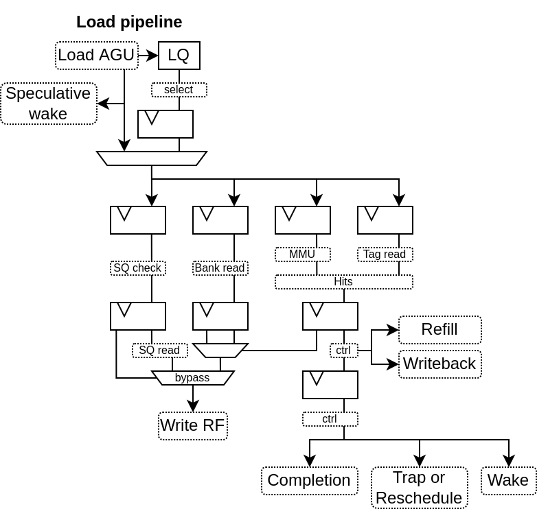
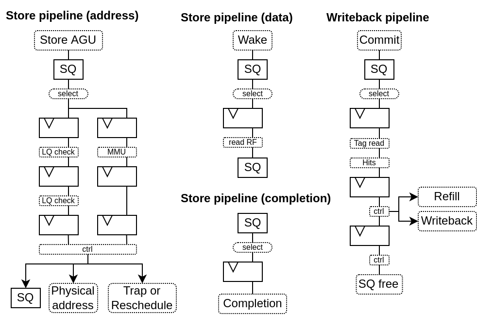
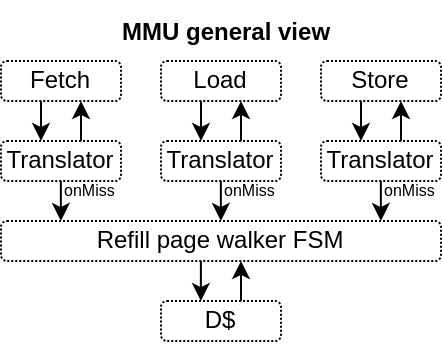
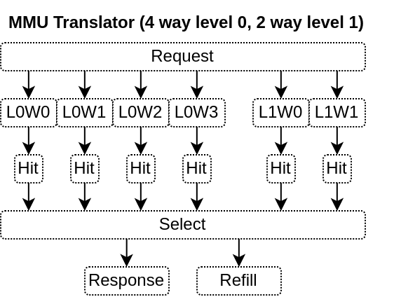

Memory system¶
Load store unite¶
The LSU implementation is characterised by :
LQ / SQ : Usualy, 16 of each
Store Address / Data : For store, only the address is provided through the issue queue / AGU, while there is some logic from the SQ to fetch the store value directly from the register file.
Load Hit speculation : In order to reduce the load to use latency (to 3 cycles instead of 6), there is a cache hit predictor, speculatively waking up depending instructions
Load from AGU : To reduce the load latency, if the LQ has nothing for the load pipeline, then the AGU can directly provide its fresh calculation without passing by the LQ registers
Store to load bypass : If a given load depend on a single store of the same size, then the load pipeline may bypass the store value instead of waiting for the store writeback
Parallel memory translation : For loads, to reduce the latency, the memory translation run in parallel of the cache read.
Here is a few illustrations of the load and store pipeline :
 MMU¶
The MMU implementation is characterised by :
2D organisation : For each level of the pages table a parameterable number of direct mapped ways of translation cache can be specified.
Hardware refilled : Because that’s cheap
Caches direct hit : Allows the instruction cache to check his way tags directly against the MMU TLB storage in order to improve timings (at the cost of area)
For RV32, the default configuration is to have :
4 ways * 32 entries of level 0 (4KB pages) TLB
2 ways * 32 entries of level 1 (4MB pages) TLB
The area of the TLB cache is keept low by inferring each way into a distributed ram.
Here is a few illustrations of the MMU design
 